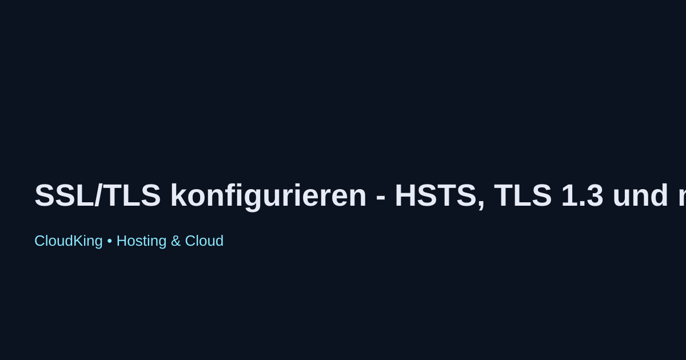

SSL/TLS konfigurieren - HSTS, TLS 1.3 und mehr
Die Konfiguration von SSL/TLS ist entscheidend für die Sicherheit Ihrer Webanwendungen. In diesem Artikel erfahren Sie, wie Sie SSL/TLS effektiv einrichten und dabei die neuesten Standards wie HSTS und TLS 1.3 nutzen.
Was ist SSL/TLS?
SSL (Secure Sockets Layer) und TLS (Transport Layer Security) sind Protokolle zur Sicherung der Kommunikation über das Internet. Sie gewährleisten, dass Daten verschlüsselt und sicher zwischen Client und Server übertragen werden.
HSTS aktivieren
HTTP Strict Transport Security (HSTS) ist ein Sicherheitsmechanismus, der sicherstellt, dass Browser nur über HTTPS auf Ihre Website zugreifen. Um HSTS zu aktivieren, fügen Sie die folgende Zeile in Ihre Serverkonfiguration ein:
Strict-Transport-Security: max-age=31536000; includeSubDomains
TLS 1.3 konfigurieren
TLS 1.3 ist die neueste Version des TLS-Protokolls, die verbesserte Sicherheit und Leistung bietet. Stellen Sie sicher, dass Ihr Webserver TLS 1.3 unterstützt und aktivieren Sie es in Ihrer Konfiguration. Beispiel für Nginx:
ssl_protocols TLSv1.2 TLSv1.3;
Fazit
Die richtige Konfiguration von SSL/TLS, einschließlich HSTS und TLS 1.3, ist unerlässlich für die Sicherheit Ihrer Website. Überprüfen Sie regelmäßig Ihre Einstellungen und halten Sie Ihre Software aktuell, um Sicherheitsrisiken zu minimieren.